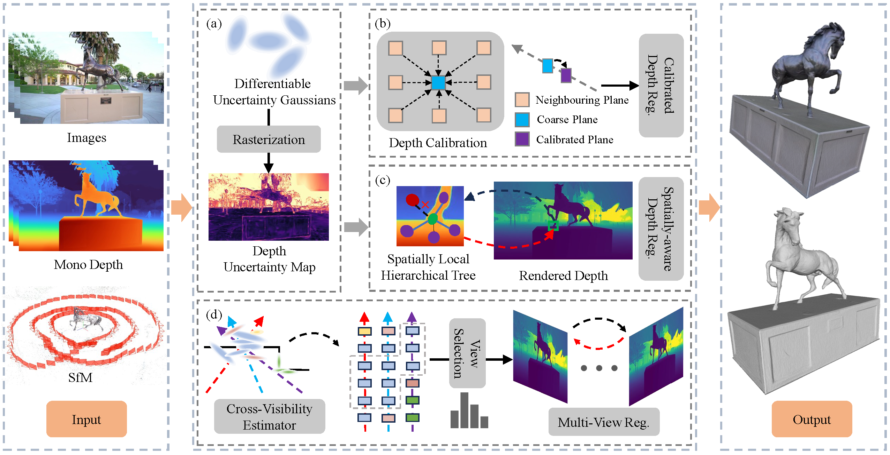
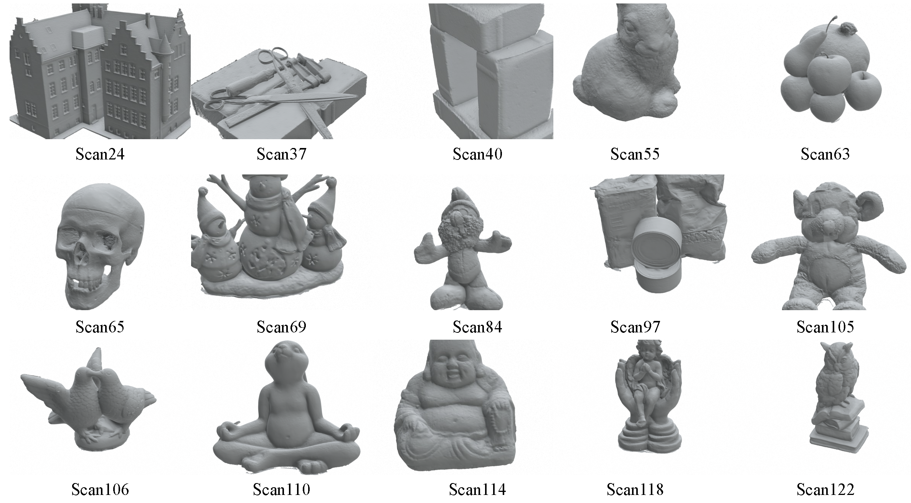
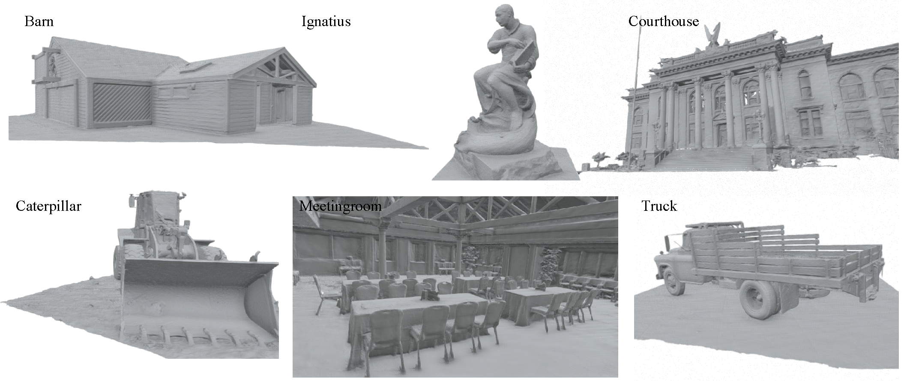
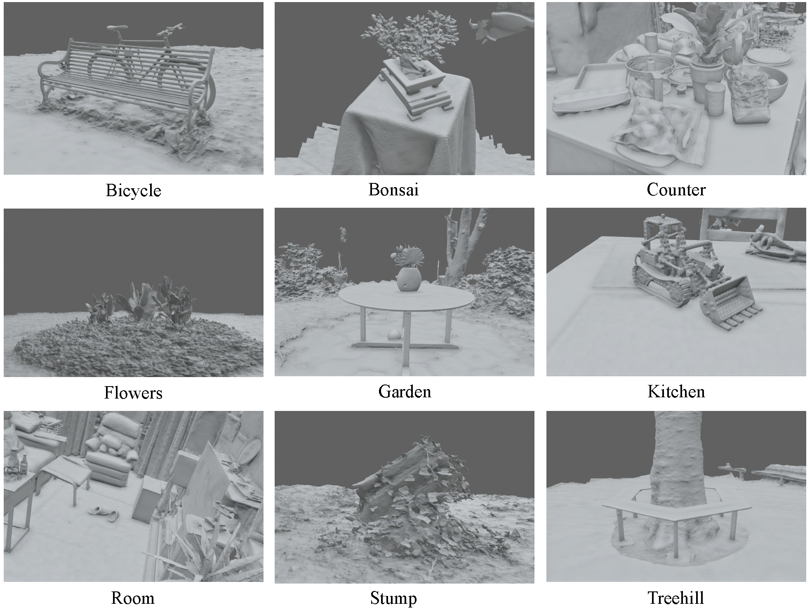
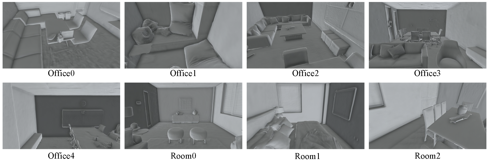

Figures below present all mesh reconstruction results of GPM-GS on the DTU, Tanks and Temples (TnT), MipNeRF360, and Replica datasets, respectively.

Image based 3D Gaussian Splatting (3DGS) lacks explicit geometric constraints, leading to inherent representational bottlenecks in surface reconstruction. This issue becomes especially pronounced in challenging scenes, such as those with weak texture and complex geometric structures. Although substantial progress has been achieved via monocular depth or multi-view geometric regularization, performance still degrades in complex scenes. The main reason is the insufficient exploitation of these valuable geometric features. To address this problem, this paper introduces GPM-GS, a novel approach that constructs a geometric probability model (GPM) using prior knowledge and self-supervision. This helps the Gaussian radiance field converge toward accurate surface representation. Specifically, we first establish a depth probability model (DepthPM). It guides the utilization of monocular cues by the self-assessment Gaussian radiance field. These cues compensate for the limitations of photometric supervision, thus largely alleviating the inconsistency between 2D visual quality and 3D structural accuracy. Next, a calibration strategy is introduced based on a planar probability model (PlanarPM). It exploits local structural priors from monocular cues to correct under-reconstructed regions and improve geometric completeness. Finally, a cross-view probability model (CrossPM) is proposed to facilitate multi-view sampling and enforce cross-view consistency regularization. This maximizes the use of shared observations across views, effectively enhancing surface fidelity and fine-grained details. Extensive evaluations on various challenging scenes show that our method consistently achieves state-of-the-art (SOTA) reconstruction quality.
Figures below present all mesh reconstruction results of GPM-GS on the DTU, Tanks and Temples (TnT), MipNeRF360, and Replica datasets, respectively.

Figure 1. All mesh reconstruction results of GPM-GS on the DTU dataset.

Figure 2. All mesh reconstruction results of GPM-GS on the Tanks and Temples (TnT) dataset.

Figure 3. All mesh reconstruction results of GPM-GS on the MipNeRF360 dataset.

Figure 4. All mesh reconstruction results of GPM-GS on the Replica dataset.
The code is available now